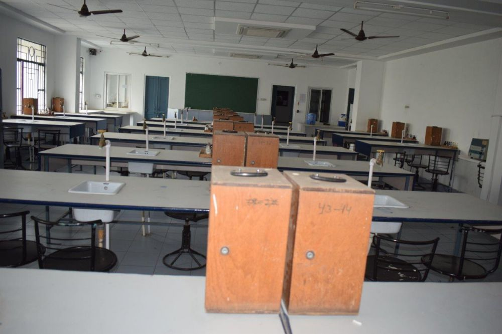

Experiments
- Experiment 1
To study and determine the percentage of the pollen germination.
- Experiment 2
To Preparation and study the mitosis in onion root tips.
- Experiment 3
To Study and validate Mendel’s Law of the Segregation.
- Experiment 4
To Study and validate Mendel’s Law of the Independent Assortment.
- Experiment 5
To study the ecological conversion in the plants living in hybrid and xeric situation.